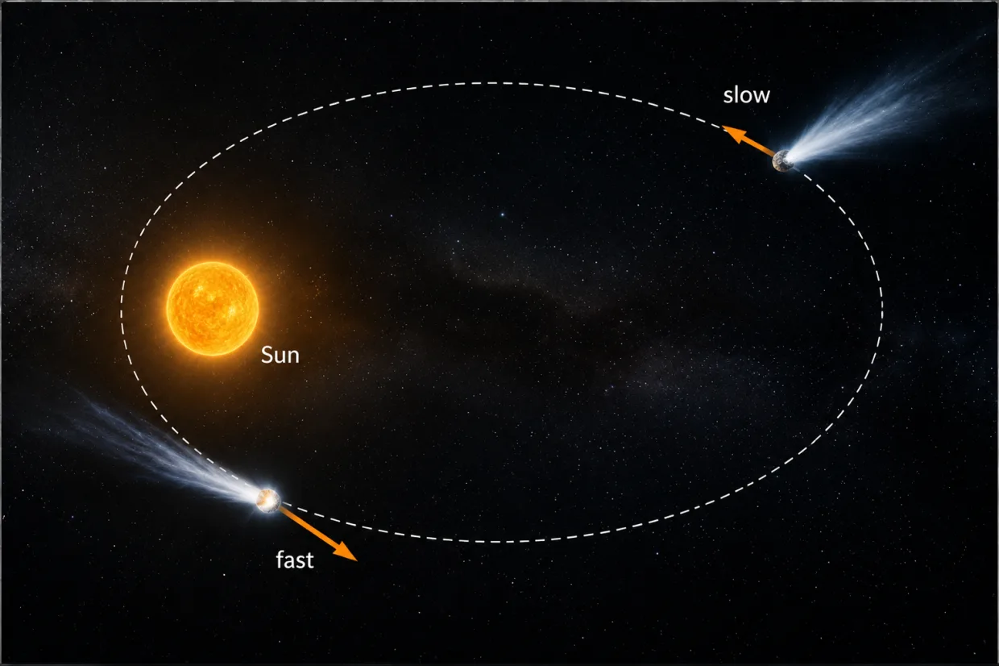
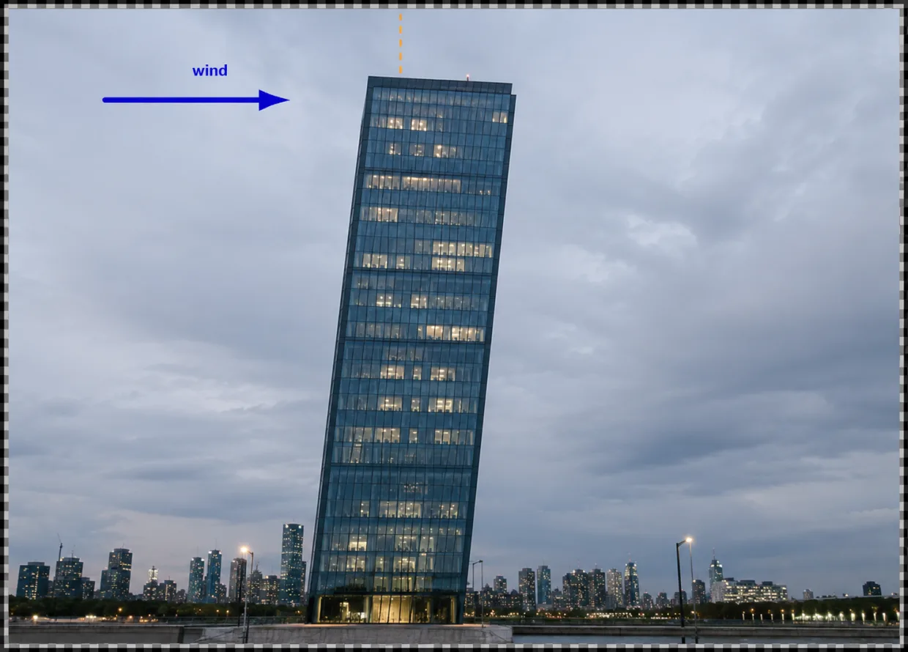
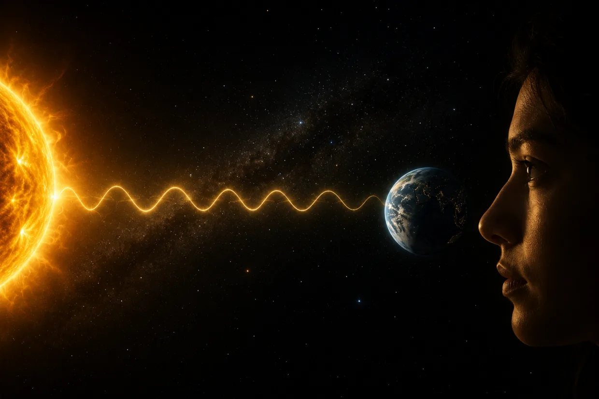
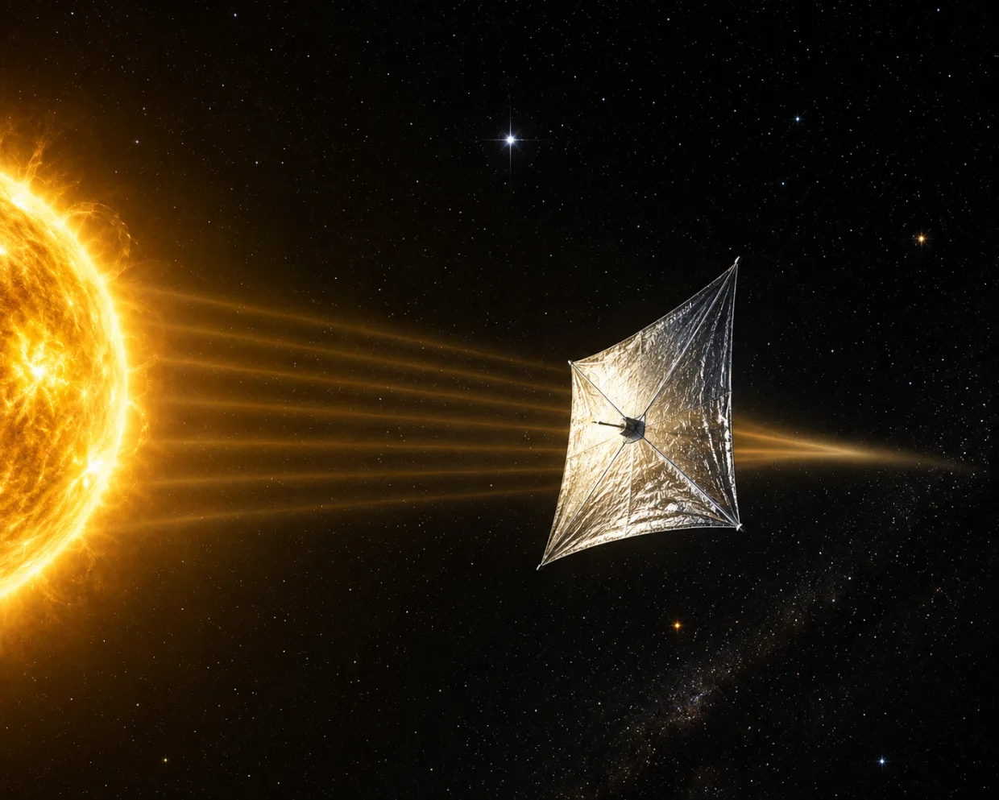

Physics isn't hard. It's just arrogantly honest about what we don't know.
Learn Physics out of curiosity — not just to crack exams. Exams come and go; curiosity stays with you for life.
Explore 36 foundational topics, from Units & Measurements to Semiconductor Logic Gates. Begin with a single question that sparks wonder, then follow it all the way to the frontiers of human knowledge — where today's science ends up as a complete failure.
Mechanics
Units and Measurements
Every measurement rests on a handful of agreed units. A patient's temperature in celsius. Weight of your school bag in kilograms. A rocket's height in feet.
But WHY should my metre be the same as your metre? Why should we agree on what units to use and what those units denote?
Well, here is one reason. A spacecraft was once destroyed (!) because two engineers used two different units for the same quantity — one used metric system (metre, kilogram, seconds), and the other team used the imperial system (feet, pound, seconds) — and failed to pay attention.
So you can see that speaking the same language is crucial in science. But how can we be sure that a metre in New York is the SAME metre in Kolkata? You might suggest using some reference object in a neutral third country. But physical objects do not work well. A metal bar can bend with temperature. It can also wear down over decades.
So modern definitions of our day-to-day units (like seconds) are tied to atoms (!) instead — a Caesium atom's vibrations, and the speed of light. These NEVER change with time or location.
But why does it not change with time or space? Clearly, our clever solution works ONLY because every caesium atom is exactly the same. Not almost same — all caesium atoms are exactly identical. They come with zero variation.
But WHY? Why should that be true? Science has a partial answer. Atoms of the same kind are ripples in an underlying quantum field. That field is governed by fixed constants of nature.
But why?! Why do those constants carry the exact values they do — values that make every atom, everywhere, identical? We just don't know!
Improve your Speed & AccuracyMotion in a Straight Line
A driver sees a child step onto the road. The driver slams on the brakes. Will the car stop in time?

It depends on exactly one thing: how fast the car was going the moment the brakes were hit. Track the car's position at every instant, and you get its speed. Track how the speed changes, and you can work out exactly where it will stop — before it happens.
Is that all? Not quite. This only works if the car's motion is smooth. Between any two points on the road, there is always another point in between. Between any two moments, there is always another moment in between. Speed at a single instant only makes sense if space and time can be sliced this finely, forever.
But can they really be sliced forever? Maybe there is a smallest possible bit of space. Maybe there is a smallest possible tick of time (Planck limit). Below that, the road might have no more room left to slice. Physicists have wondered about this for many years. Nobody has ever measured down that far. Nobody knows if motion secretly breaks into tiny jumps once you look closely enough. We just don't know!!
Improve your Speed & AccuracyMotion in a Plane & Projectile Motion
Suppose a World War I gunner has one shell, and one target: a bridge a kilometre away. At what angle must he fire to hit it?

The trick is that the shell's horizontal forward motion and its vertical fall are two separate, independent problems. The shell moves forward horizontally at a steady pace — gravity doesn't touch that part at all. At the same time, it goes up and then falls vertically. Solve the forward part. Solve the falling part. Put them together, and the required firing angle emerges naturally.
Is that all? Not quite. Look at the falling half again. A heavy shell and a light shell, fired the same way, land in the exact same spot. No dependence on mass. This isn't a coincidence. General relativity explains it: gravity isn't really a force pulling on mass at all. It is the shape of space and time itself, curved by whatever mass is nearby. Every falling thing is just moving in the straightest possible way through that curve, so its own mass never enters the picture.
But WHY does mass curve space and time in the first place? We don't know. We can measure exactly how much a mass bends the space around it, and calculate precisely how anything will move through that bend. But WHY matter should do this to the universe at all is still open. We just don't know!!
Improve your Speed & AccuracyLaws of Motion
The Moon has circled the Earth for billions of years. It never slows down. It never drifts away. What keeps it curving instead of moving in a straight line?

Newton's first law says: left alone, anything moves in a straight line, forever, at the same speed. The Moon's path bends instead. So something MUST be pushing or pulling it sideways, at every single instant. Newton's second law tells us exactly how strong that push must be — just from the Moon's speed, and how sharply its path curves.
Is that all? Not quite. Push a shopping cart, and it leaps forward. Push a loaded truck exactly as hard, and it barely creeps. The truck has more `inertia' — a built-in reluctance to have its motion changed at all. Newton's laws DO NOT explain WHY the truck has more inertia than the cart; they just measure it, and call the number mass. That part, we can calculate perfectly.
WHY anything should have inertia in the first place, Newton never explained. He simply built it into his laws as a given.
So WHERE does inertia (or mass) actually come from? Physicists don't know. Some have linked it to invisible fields filling all of space. Nobody has pieced together a good explanation for why anything should have inertia at all. We just don't know.
Improve your Speed & AccuracyFriction
A Formula One car can race around a corner at incredible speed. Then it starts raining, and suddenly the tyres begin to slip. But the car is the same. The tyres are the same. Even the road is the same. So what actually changed?

The answer is friction. If you could shrink yourself down and look at the road through a powerful microscope, it would not look smooth at all. It would look like a jagged mountain range, covered with tiny bumps and cracks. On a dry road, the rubber tyre catches onto these tiny bumps and grips the surface. But when rain and mud fill those cracks, the bumps are hidden. The tyre can no longer get a good hold, so it starts to slide instead.
You might think the solution is simple: make the tyre wider. After all, a wider tyre touches more of the road, so it should have more grip. Surprisingly, it usually doesn't. If two tyres carry the same weight, they often produce almost the same amount of friction. A wider tyre spreads the weight over a larger area, so each tiny part presses less firmly. Those two effects almost cancel each other out.
Here's the real surprise. Friction is everywhere. It lets you walk without slipping, helps cars stop at traffic lights, and keeps aeroplanes, bicycles, and machines working safely. Engineers rely on it every single day.
Yet there is something we still cannot do.
If someone invented a brand-new material tomorrow, physicists could not calculate its friction from the laws of physics alone. They would have to build it, test it, and measure the answer in a laboratory. After centuries of studying nature, we still don't know how to predict friction from scratch.
We know why friction exists. We know how to measure it. But calculating it from first principles remains one of the great unsolved challenges of physics.
Improve your Speed & AccuracyWork and Energy
A comet can spend millions of years drifting at the icy edge of the Solar System, moving so slowly that it seems almost frozen in space. Then something remarkable happens. It begins falling toward the Sun. Year after year, it speeds up until it is racing through space faster than any spacecraft humans have ever launched.

Where did all that speed come from?
The Sun didn't suddenly give the comet a giant push. Instead, the speed was hidden there all along. When the comet was far from the Sun, it had potential energy — stored energy, just like a ball held high above the ground before you let go. As the comet falls, that stored energy slowly changes into motion. The closer it gets to the Sun, the faster it moves.
But that raises another question. Why should simply being far away count as stored energy? Imagine lifting a heavy rock onto a shelf. You have to work against gravity to get it there. That work doesn't disappear. It is stored in the rock's position, ready to be released when the rock falls. A comet is no different. Long ago, whatever carried it far from the Sun gave it energy by putting it there. As it falls back, that energy is returned as speed.
This simple idea turns out to be one of the deepest rules in all of science. Energy never simply appears from nowhere, and it never vanishes into nothing. It only changes form—from stored energy to motion, from motion to heat, from heat to light, and back again.
But why should that always be true?
Physicists have discovered something astonishing. Energy is conserved only because the laws of nature never change with time. Gravity works today exactly as it did yesterday, and exactly as it will tomorrow. If the laws of physics could change from one day to the next, energy itself could suddenly appear—or disappear.
Why should the universe obey the same rules at every moment, across billions of years? It does. But nobody knows why.
Improve your Speed & AccuracyCollisions
Two cars crash head-on at high speed. The metal crumples, the windows shatter, and the cars may even bounce apart. It looks like complete chaos.

But hidden inside all that chaos is one quantity that never changes.
It is called momentum. Momentum depends on two things: how much mass an object has and how fast it is moving. A heavy truck moving slowly can have the same momentum as a small car moving much faster. During a crash, the two vehicles push on each other with exactly equal and opposite forces. One car may lose momentum, but the other gains exactly the same amount. Add up the momentum of both cars together, and the total is exactly the same before the crash as it is after.
You might wonder whether the same is true for energy. After all, the cars stop moving, so where does all their energy go? It doesn't disappear. Most of it is transformed into other forms — crumpled metal, heat, sound, and broken glass. The total energy is still there, but it no longer looks like motion. Momentum, however, is even more remarkable. It doesn't change form or hide somewhere else. It simply stays perfectly balanced throughout the collision, no matter how violent it is.
Now imagine a collision far stranger than any car crash. A particle meets its antimatter twin. Instead of bouncing apart or breaking into pieces, both disappear completely, replaced by a burst of light. It seems almost like magic — but even here, momentum balances perfectly. Nothing escapes nature's accounting.
This leads to one of the greatest mysteries in physics.
The Big Bang should have created equal amounts of matter and antimatter. If it had, almost every particle would have found its opposite partner. They would have annihilated each other, leaving behind a universe filled with little more than light.
But that didn't happen.
For every billions of pairs that destroyed each other, about one extra particle of matter survived. That tiny leftover was enough to build every galaxy, every star, every planet, and every living thing in the universe — including you. WHY was there that one extra particle? After decades of experiments, physicists still don't know. It may be the reason we exist at all.
Improve your Speed & AccuracyRotational Motion
A footballer strikes the ball perfectly. It shoots across the field—but it doesn't just move forward. It also spins. Watch a curling free kick or a cricket ball swinging through the air, and you'll see that the spin can completely change where the ball goes.

So how do physicists describe spinning?
Just as straight-line motion has its own rules, spinning has a whole new set of ideas. The speed of the spin is called angular velocity. But there's another question: how easy is it to make something spin? Surprisingly, that doesn't depend only on its weight. It also depends on where that weight is. A hollow ball and a solid ball can weigh exactly the same, yet one is much easier to spin because its mass is arranged differently.
You can see this in one of the most beautiful tricks in sports. A figure skater begins spinning with her arms stretched wide. Then, without anyone touching her, she pulls her arms in—and suddenly she spins much faster. It almost looks like she has created speed out of nowhere. She hasn't. The total amount of spin, called angular momentum, stays the same. By pulling her arms closer to her body, she changes how her mass is spread out. To keep the total spin unchanged, her rotation has to speed up. It's the same reason divers tuck into a ball before twisting through the air.
This idea is so powerful that it doesn't stop at footballs or figure skaters. It reaches all the way to the most extreme objects in the universe: black holes.
A black hole can swallow stars, planets, and even entire clouds of gas. Almost everything about those objects seems to disappear forever. Yet one thing survives. If the object was spinning before it fell in, that spin becomes part of the black hole itself. Somehow, even the universe's ultimate destroyer cannot erase angular momentum. What happens to everything else that falls inside a black hole?
After decades of research, physicists still don't know.
Improve your Speed & AccuracyGravitation
The Moon is being pulled by the Earth towards itself right now.

It has been pulled for more than 4 billion years — and yet it never crashes into us. How is that possible?
The answer is that the Moon isn't static. It is moving sideways at incredible speed. Every second, Earth's gravity pulls it inward. But every second, the Moon moves forward just enough to miss Earth. And that endless motion is what we call an orbit.
So what decides how hard Earth pulls?
The rule is surprisingly simple. Every object with mass pulls on every other object. A bigger object pulls harder. Move the objects farther apart, and the pull quickly becomes weaker. Double the distance, and the force drops to just one-quarter. With this single idea, Newton explained falling apples, the Moon's orbit, the planets around the Sun, and, centuries later, every satellite we have ever launched.
That may not sound surprising today, but in Newton's time it was a revolutionary idea. People believed the heavens followed different rules from Earth. Apples fell because they belonged on the ground. Planets moved because the sky was somehow special.
Newton showed that nature doesn't work that way.
The force pulling an apple downward is exactly the same force holding the Moon in its orbit. The same law works here on Earth, across the Solar System, and billions of kilometres into space. Suddenly, the universe became much simpler—and much more beautiful.
But the story doesn't end there.
When astronomers looked at entire galaxies, they found something strange. The stars near the edges were moving so fast that gravity shouldn't have been able to hold them together. By Newton's law, those galaxies should have flown apart long ago.
Something is missing.
Perhaps galaxies are filled with an invisible substance called dark matter, whose gravity we can feel but whose particles we have never directly detected. Or perhaps gravity itself changes over enormous distances, and Newton's law is only part of the story.
After decades of searching, we still don't know which answer is right.
The force that keeps the Moon circling Earth may also be hiding one of the biggest secrets in the universe.
Improve your Speed & AccuracyProperties of Matter & Heat
Elasticity
The world's tallest buildings aren't completely rigid.

On a windy day, they actually sway. Not by much—often just a few tens of centimetres—but enough that the engineers who designed them had to predict that motion long before the first brick was laid. If they guessed wrong, the building could crack, or in the worst case, collapse.
So how do engineers know how much a building will bend?
It comes down to two simple ideas. Stress is how hard you push or pull on a material. Strain is how much it changes shape because of that push. Every material has its own personality. Steel barely stretches at all. Rubber stretches easily. A single number, called Young's modulus, tells engineers exactly how stiff a material is and lets them calculate how much it will bend under a given load.
But why is it so predictable?
The answer lies inside the material itself. Every solid is made of atoms joined together by tiny bonds. You can think of those bonds as billions upon billions of microscopic springs. Pull gently, and each spring stretches just a little. Since they all share the load together, the whole material bends smoothly and predictably. But if you pull too hard, some of those tiny springs begin to snap. Once enough of them break, the material can no longer spring back—it fractures.
This simple picture explains everything from bridges and aircraft wings to fishing rods and diving boards.
Yet it also leads to a remarkable mystery.
From the strength of those atomic bonds alone, physicists can calculate how strong a perfect material ought to be. In theory, some materials should be so strong that they could support incredible structures—even a cable stretching from Earth into space.
But in the real world, nothing ever reaches that theoretical strength.
Somewhere inside every large piece of steel, glass, or carbon fibre, there is always a tiny flaw: a microscopic crack, a missing atom, or an imperfection too small to see. Under enough stress, that tiny defect becomes the place where the entire structure begins to fail.
After all our advances in materials science, nobody has ever made a large object that is truly perfect.
We still don't know whether a flawless material is something nature simply makes impossible.
Improve your Speed & AccuracyFluid Statics
If you've ever looked at a dam, you may have noticed something curious. It is always much thicker at the bottom than at the top.

Why does the bottom need so much more concrete?
The answer is pressure. Imagine diving into a swimming pool. As you swim deeper, you can feel the water pressing more strongly against your ears. That's because the deeper you go, the more water is stacked above you. All that water has weight, and its weight is passed down through the water below it. The deeper you are, the greater the pressure.
That's why the bottom of a dam has to be so strong. The water near the base is supporting the weight of the entire lake above it, while the water near the surface has very little weight above it. The deeper the water, the harder it pushes against the wall.
But here's the surprising part. The weight of the water acts downward, yet if you dive underwater, you don't feel the water pressing only on the top of your head. It presses equally on your sides, your chest, your back, your feet—everywhere. How can a downward weight create pressure in every direction?
The reason is that water can flow. If the pressure at one point were greater in one direction than another, the water would immediately move until the difference disappeared. As a result, the pressure at any point in a still liquid is the same in every direction.
This simple idea explains why dams stand, why submarines can dive safely, and how hydraulic machines can lift enormous weights.
But nature pushes this idea to an astonishing extreme.
Imagine squeezing an object more massive than the Sun until it becomes a ball only about 20 kilometres across. The pressure becomes so enormous that atoms themselves are crushed apart. This is a neutron star, one of the densest objects in the universe.
What does matter become under such unbelievable pressure?
Nobody knows for sure.
Inside a neutron star, matter is pushed into a state that no experiment on Earth can reproduce. Whatever exists there may be unlike anything we have ever seen.
The universe already knows the answer. We don't.
Improve your Speed & AccuracyFluid Dynamics
A river flows gently across a wide valley. Then it reaches a narrow gorge. Almost instantly, the calm water turns into a fast, roaring stream. Nothing has changed about the river's slope. So why did the water suddenly speed up?

Imagine hundreds of litres of water arriving at the narrow gorge every second. That same amount of water still has to get through. It can't simply disappear, and it can't pile up forever. The only solution is for the water to move faster. The narrower the channel becomes, the faster the water has to flow to let the same amount pass through every second.
So far, everything is beautifully predictable.
But only as long as the water flows smoothly.
Push the water fast enough, or force it through a rough enough channel, and the smooth flow suddenly breaks apart. Swirls appear. Whirlpools form. The water tumbles in every direction. This chaotic motion is called turbulence, and anyone who has watched rapids in a river has seen it with their own eyes. You might think that, after centuries of studying physics, we completely understand something as common as turbulent water. We don't.
The equations that describe flowing fluids have been known for nearly two hundred years. They explain smooth flow brilliantly. But once turbulence begins, they become astonishingly difficult to solve. In fact, proving that these equations always behave properly is one of the seven famous Millennium Prize Problems. Solve it, and you win a prize of one million dollars.
The equations are written down. The rivers keep flowing. But some of the mathematics behind them remains one of the deepest unsolved mysteries in science.
Improve your Speed & AccuracySurface Tension
A soap bubble is one of most beautiful things in nature. Blow gently through a ring, and a shimmering bubble appears. No matter how unevenly you blow, it quickly settles into a nearly perfect sphere.
Why?
A soap bubble is a very thin film of soapy water wrapped around a pocket of air that you trapped when you blew it. The film faces the following challenge: how can it surround that pocket of air while using the least possible surface? The answer is a sphere.
But why does the liquid want to shrink its surface in the first place?
The answer lies in the tiny molecules that make up the liquid. A molecule deep inside the liquid is surrounded by neighbours on all sides, and those neighbours attract one another. A molecule at the surface has fewer neighbours, so it is in a less stable, higher-energy position. The liquid naturally tries to reduce the number of molecules stuck at the surface. The result is a gentle inward pull called surface tension, which constantly tries to shrink the surface as much as it can.
Surface tension may have played a role in one of the greatest events in the history of the universe.
Every living cell is surrounded by a thin membrane that separates its inside from the outside world. Billions of years ago, on the young Earth, simple molecules floating in water somehow began forming tiny enclosed membranes, creating little chemical "rooms" where the first steps toward life could take place. At some point, one of those tiny compartments crossed an invisible line. It stopped being just a bubble of chemicals and became the ancestor of every living thing that has ever existed.
Exactly how that happened is still one of science's greatest mysteries. We know how bubbles form. We still don't know how life did.
Improve your Speed & AccuracyThermal Properties and Calorimetry
On a hot summer afternoon, railway tracks become slightly longer than they were in winter. The change is tiny — just a few millimetres over each section of rail — but over many kilometres, it adds up. That's why railway tracks are built with small gaps between them. Without those gaps, the expanding steel could push against itself until the tracks bent and buckled, making them dangerous for passing trains.

So why does heating a solid make it grow?
Everything is made of atoms, and those atoms are always moving. When you heat a material, its atoms jiggle more vigorously. Different materials respond differently. Steel expands only a little. Aluminium expands much more. But it also leads to a surprisingly deep question. But what about a single atom floating alone in space?
Can one atom have a temperature?
The answer is stranger than it sounds.
One atom, drifting alone, is neither hot nor cold. Temperature isn't something a single atom carries by itself — it only appears once countless atoms are jiggling together.
So somewhere between one atom and a jarful of gas, this new idea called temperature switches on.
Scientists who study very small clusters of atoms are still working out exactly how that happens — and how few atoms you can get away with before the whole idea of temperature stops making sense.
Improve your Speed & AccuracyHeat Transfer
The Sun is about 150 million kilometres away from Earth. Between us and the Sun is almost empty space. There is no air, no water, and no metal connecting the two. So how does the Sun keep us warm?

Heat can travel in three different ways. The first is conduction, where heat passes from one atom to the next. That's why the handle of a metal spoon gets hot if you leave it in a cup of tea. The second is convection, where heat is carried by a moving fluid, such as warm air rising from a heater.
Neither of those can work in space.
The Sun warms Earth using the third method: radiation. Instead of relying on atoms or moving air, heat travels as electromagnetic waves. These waves can cross the emptiness of space, carrying energy from the Sun all the way to our planet in about eight minutes.
But that leads to a deeper question. Why does something hot send out these waves at all?
Inside every hot object, atoms are constantly jiggling. The hotter the object becomes, the more violently they move. Those moving atoms produce electromagnetic waves that stream away in every direction. That's why the Sun can heat a planet millions of kilometres away.
Every warm object in the universe is quietly sending out radiation all the time — even your own body. This simple idea explains sunlight, and the warmth you feel from a fire. But it also uncovers a remarkable mystery.
Billions of years ago, when life first appeared on Earth, the young Sun was much dimmer than it is today. By our best calculations, our planet should have been so cold that its oceans froze solid. Yet they didn't. Ancient rocks show clear evidence of flowing water and a surprisingly warm climate. Somehow, early Earth stayed warm enough for oceans to exist — and eventually, for life to begin. Exactly how that happened is still debated today.
The Sun was faint and yet the Earth was warm. WHY? We just don't know.
Improve your Speed & AccuracyThermodynamics
Every morning, you can tidy your bedroom. But if you leave it alone for a week, it slowly becomes messy again. An egg can be scrambled, but it never unscrambles itself. A drop of ink spreads through a glass of water.

Why do so many things in nature seem to move in only one direction — from order to disorder?
The answer is a big idea called entropy. Entropy is a way of measuring how spread out or mixed up things are. Imagine opening a bottle of perfume in one corner of a room. At first, all the perfume molecules are packed into one small bottle. A few minutes later, they have spread throughout the room. They don't gather themselves neatly back into the bottle again.
The same idea explains many everyday events. Heat flows from a hot object to a colder one. Smoke spreads through the air. Ice melts in warm water.
Nature seems to prefer states where energy and particles are more evenly spread out. But why?
The reason is surprisingly simple. There are only a few ways for things to be neat and organised, but there are an enormous number of ways for them to be mixed up. If billions upon billions of tiny particles are moving around at random, they are overwhelmingly more likely to end up in one of the messy arrangements than in one of the tidy ones.
That doesn't mean order can never appear. You can build a house, bake a cake, or organise your room. But doing any of those takes energy. And while you create order in one place, even more disorder is created somewhere else. In theory, nothing actually stops a scrambled egg from putting itself back together. The laws of physics allow it.
The problem is the probability. There are so many different scrambled arrangements, and so few perfectly organised ones, that the chance of an egg spontaneously unscrambling itself is so tiny that it would almost certainly never happen, even if you waited far longer than the age of the universe.
But this leads to one of the biggest mysteries in all of science. If disorder is so overwhelmingly likely, why did the universe begin in such a wonderfully orderly state?
When astronomers look back to the earliest moments after the Big Bang, they find a universe that was astonishingly smooth and organised. That extraordinary beginning made it possible for stars, galaxies, planets, and eventually life to form. Why did the universe start out so special instead of already being as disordered as it could be? Nobody knows.
Improve your Speed & AccuracyKinetic Theory of Gases
In 1827, a botanist noticed something odd. Tiny grains of pollen floating in water were constantly twitching and dancing, even though there was no current pushing them. They never seemed to come to rest. What was making them move?
Almost eighty years later, in 1905, Albert Einstein gave the answer. Water is not a smooth, continuous liquid. It is made of unimaginably tiny molecules, all moving randomly. Each molecule is far too small to see, but together they constantly bump into the pollen grain from every direction. The bumps are never perfectly balanced, so the grain jitters endlessly. This was one of the first direct pieces of evidence that atoms and molecules are real.
Once you picture a gas or liquid as billions of tiny particles flying around, two familiar ideas suddenly become much easier to understand. Temperature is simply a measure of how fast those particles are moving, on average. Faster-moving particles mean a higher temperature. Pressure comes from those particles crashing into the walls of their container. Every second, trillions upon trillions of tiny collisions add together to create one steady push.
But that raises another question. If pressure is really made of countless random collisions, why doesn't it feel random? Why doesn't the reading on a pressure gauge jump wildly up and down every moment?
The answer is numbers. There are so many collisions happening every second that the tiny ups and downs cancel one another out. It's like standing in a rainstorm. Every raindrop lands at a different place and a different time, yet together they sound like one smooth, steady roar.
This picture of matter has transformed science. It explains why balloons inflate, why tyres hold air, why weather changes, and why gases expand when heated. But it also leads to one of the deepest puzzles in physics.
Imagine watching just two molecules collide. If you played the video backwards, the collision would still obey the laws of physics. Nothing would look impossible. So why does a gas spread out to fill a room, but never gather itself back into one corner? Somehow, trillions of tiny collisions that each work perfectly well forwards and backwards combine to produce a world where time seems to have a preferred direction — from past to future. Exactly how that direction emerges is still one of the great unanswered questions in physics.
Improve your Speed & AccuracyOscillations & Waves
Simple Harmonic Motion
Suppose a child sits on a swing in a playground. Give the swing a gentle push, and it rocks back and forth. Push it much harder, and it swings in a much bigger arc. You might expect the bigger swing to take much longer to complete one back-and-forth journey.
Surprisingly, it doesn't.
As long as the swing isn't pushed to an extreme angle, each swing takes almost exactly the same amount of time. This remarkable property made pendulum clocks the most accurate clocks in the world for hundreds of years.
Why does that happen?
Whenever the swing moves away from its resting position, gravity pulls it back toward the middle. The farther it moves away, the stronger that pull becomes. A bigger swing has farther to travel, but it is also pulled back more strongly, so it moves faster. Those two effects almost perfectly balance each other. The result is that a small swing and a much larger one take almost the same time to complete a cycle.
This kind of repeating motion is called an oscillation, and it appears everywhere in nature. Guitar strings vibrate. Buildings sway gently in the wind. Even the tiny electrical signals inside radios and computers are built from oscillations.
But nature has an even more beautiful trick.
In some forests, thousands of fireflies begin the evening flashing at random. Each one follows its own rhythm. Yet after a few minutes, something extraordinary happens. Without a leader, without a conductor, and without any central control, they begin flashing together until the entire tree lights up in perfect synchrony.
Each firefly is only responding to the flashes of the few neighbours it can see.
So how do thousands of independent insects end up behaving like a single giant organism?
Scientists have discovered simple mathematical rules that explain part of the story, but the full picture is still surprisingly difficult to understand. Synchronisation appears everywhere — from fireflies and heart cells to power grids and groups of applauding people.
How simple interactions create such perfect emergent behaviour remains one of nature's most fascinating mysteries.
Improve your Speed & AccuracyWaves
An earthquake deep beneath the ocean can shake the seafloor for just a few seconds. Less than a day later, a giant wave can reach a coastline thousands of kilometres away.
How can something travel so far across the ocean?
You might imagine the same water racing all the way from the earthquake to the shore. But that's not what happens.
A wave is not a journey made by water. It is a journey made by energy. Each bit of water mostly moves up and down or in small circles, then returns to almost where it started. As it moves, it passes its energy to the water beside it, which passes it to the next, and so on. The water stays almost in place, but the wave travels onward.
It's just like a crowd doing "the wave" in a stadium. Each person simply stands up and sits back down. Nobody runs around the stadium. Yet the wave sweeps all the way around the crowd.
This is why a tsunami can cross an entire ocean without carrying the ocean with it.
Out in the deep sea, a tsunami is surprisingly difficult to notice. It may be hundreds of kilometres long but only a metre or two high, so ships often pass right over it without realising anything unusual is happening. But as the wave reaches shallow water, everything changes. The front of the wave slows down because it begins scraping against the seabed, while the enormous amount of energy behind it keeps arriving. With less room to spread out, the wave grows taller and steeper until it crashes onto the coast with tremendous force.
But the ocean still has surprises.
For centuries, sailors told stories of enormous waves that appeared without warning — towering walls of water far higher than all the waves around them. Many scientists dismissed these stories as myths or exaggerations.
Then, in 1995, an oil platform in the North Sea measured one. A single wave nearly twice the height of its neighbours rose out of the sea and disappeared just as quickly. These are rogue waves. But we still cannot reliably predict when or where one will appear.
The ocean knows how to build them. We don't know why they happen.
Improve your Speed & AccuracyDoppler Effect
A fighter jet roars across the sky. If it is flying slower than the speed of sound, you hear it coming from far away. The sound gets louder and louder as the jet approaches, then slowly fades as it flies away.

But if the jet flies faster than sound, something completely different happens. You hear nothing.
Then, without warning — BOOM! A single explosive crack shakes the air. A moment later, it's quiet again.
Why does this strange phenomenon happen?
Sound doesn't reach your ears instantly. It travels through the air at about 340 metres per second, passed from one air molecule to the next like a message travelling through a crowd. As long as the jet is flying slower than sound, the noise it makes can race ahead of it. Long before the jet arrives, its earlier sounds have already reached you.
But once the jet goes faster than sound, it outruns its own noise.
Every sound wave it creates is left behind. Instead of spreading out ahead of the aircraft, the waves pile up on top of one another, forming a powerful shockwave. You don't hear the jet gradually approaching because none of its sound can get to you first. You hear everything at once, at the instant that shockwave sweeps over you. That's the sonic boom.
This idea depends on something remarkable: sound has a fixed speed. It doesn't matter how loudly you shout. Your voice still travels through the air at the same speed because each air molecule can only pass the disturbance to its neighbour so quickly.
The same idea appears elsewhere in nature — but with light instead of sound.
Imagine an ambulance driving away from you. Its siren sounds lower and lower because each sound wave gets stretched farther apart.
Light behaves in a similar way. When a distant galaxy moves away from us, the light it sends also gets stretched. Instead of changing the pitch, it changes the colour, shifting toward the red end of the spectrum. Astronomers call this redshift. By measuring this stretching of light, astronomers discovered something astonishing.
Almost every distant galaxy is moving away from us. The universe itself is expanding.
Even more surprisingly, that expansion is speeding up. Gravity should be slowing everything down, but somehow the opposite is happening. To explain this mysterious effect, physicists gave it a name: dark energy.
The fancy name makes it sound like we understand what is going on. We don't. Dark Energy is simply a label for one of the biggest mysteries in modern science. We still don't know what dark energy really is.
Improve your Speed & AccuracyElectricity & Magnetism
Electric Charges and Fields
You have probably seen the atom drawn as a tiny solar system—electrons orbiting the nucleus like planets around the Sun. It is one of the most famous pictures in science.

It is also wrong.
So if electrons are not tiny planets circling the nucleus, what are they? Imagine trying to photograph a single electron. You would never capture it tracing a neat circular path. Instead, you would find a hazy cloud—a region where the electron is likely to appear. Sometimes that cloud is a perfect sphere. Sometimes it stretches into a dumbbell. Sometimes it blossoms into a four-lobed clover. These are not artistic sketches. They are the actual shapes that determine the architecture of every atom, every molecule, and ultimately everything around you. But why should an electron spread itself into a cloud at all? The positive nucleus pulls hardest at its very centre. Why doesn't the electron simply fall there and stay put?
Because nature plays by rules far stranger than common sense.
The moment you try to pin an electron to one exact location, nature makes its speed hopelessly uncertain. Allow its speed to become well-defined instead, and its position dissolves into a cloud. This is the uncertainty principle—not a flaw in our measuring instruments, but one of the deepest rules the universe obeys.
For almost a century, many physicists wondered whether this fuzziness was only apparent. Perhaps the electron always had a perfectly definite position, hidden from us like a coin already showing heads inside a closed fist. Maybe we simply lacked the tools to uncover it. Then came the experiments. Physicists devised ingenious tests that allowed nature itself to answer the question. If hidden positions really existed, the universe would behave one way. It didn't. The results were so decisive that they earned the 2022 Nobel Prize in Physics.
And yet the mystery did not disappear—it only became deeper.
If the electron does not secretly have a position before it is measured, then what does it have? What is this cloud, really? What is it that suddenly becomes a single point when we observe it? After nearly a century of quantum mechanics, the mathematics predicts every experiment with astonishing accuracy. But the underlying reality—the thing the mathematics is describing—remains one of the greatest unanswered questions in science. We know how to calculate where an electron will appear.
We still do not know what an electron is before it does.
Improve your Speed & AccuracyElectric Potential
In the 1960s, satellites began failing for no obvious reason. There were no collisions, no explosions, no signs of mechanical damage. They simply died. What was destroying them?

The culprit turned out to be something invisible.
A satellite flies through a thin sea of charged particles that fills space. Different parts of the spacecraft collect different amounts of charge, much like two buckets left in the rain can end up holding different amounts of water. One surface may accumulate far more charge than another, and as that imbalance grows, so does something called electric potential — stored electrical energy waiting for a chance to escape. Eventually, the difference becomes too great. A spark leaps from one part of the satellite to another, punching through delicate electronics and destroying circuits from the inside.
The satellite isn't struck from outside. It electrocutes itself.
But that raises a deeper question. Nothing is moving yet. The charges are just sitting there. So where is the energy actually coming from? The answer is hidden in how the charges got there. Bringing electric charges together — or pulling them apart — isn't free. You have to push against electric forces, doing work to create that arrangement. That work doesn't disappear. It becomes stored in the electric field itself, like energy stored in a compressed spring or a stretched bowstring, waiting to be released the moment the charges are allowed to move. Electric potential is simply that stored possibility.
And once you begin thinking of empty space as something that can store energy, an even stranger question appears. What if there were no charges at all?
You might expect a perfect vacuum to contain absolutely nothing. No particles. No light. No matter. No energy. But nature refuses to be that simple. According to quantum physics, even the emptiest space imaginable is never truly empty. It seethes with tiny fluctuations that cannot be eliminated, leaving behind a faint residue of energy known as vacuum energy, or zero-point energy. Even when every particle is removed, something remains.
WHY should "nothing" possess energy in the first place? WHY isn't empty space truly empty?
After decades of experiments and some of the most successful theories ever devised, physicists still don't have a satisfying answer. Sometimes, the deepest mystery isn't what exists. It's why nothing refuses to stay nothing.
Improve your Speed & AccuracyCapacitors
Jupiter's storms make ours look almost gentle. A single lightning bolt there can carry more electrical charge than any storm on Earth has ever produced. But that raises a surprisingly simple question. Before a lightning bolt erupts, where is all that charge actually sitting?

Imagine two flat metal plates facing each other, separated by a thin layer of empty space. If you pile positive charge onto one plate, it doesn't simply spill away. The negative charge on the opposite plate pulls on it across the gap, holding it in place. Make the plates larger, or move them closer together, and that attraction becomes even stronger. Now the plates can store even more charge before anything happens.
But there is a limit. Keep packing charge onto the plates, and eventually the electric pull across the gap becomes so intense that it rips electrons out of the air itself. The air, once an insulator, suddenly becomes a conductor, opening a path for the stored charge to rush across in a violent flash.
A thunderstorm works in almost exactly the same way. The cloud acts as one plate, the ground as the other, and the atmosphere between them is the insulating gap. Charge slowly builds inside the cloud until the electric field becomes strong enough to break the air apart — and in an instant, a lightning bolt is born.
But this is just theory. We have not been able to prove it.
When scientists fly instruments directly into storm clouds, they find something unexpected. The electric field inside the clouds is nowhere near strong enough to break down air by itself. According to the ordinary rules of physics, lightning shouldn't even be able to begin.
And yet it does. Millions of times, every single day.
Somehow, something gives nature's electrical fuse its very first spark. Whatever that trigger is, it has so far managed to hide from every instrument we've sent into the storm. One of the most familiar sights in nature is STILL a mystery: we know how lightning races across the sky — but we still don't know what causes it.
Improve your Speed & AccuracyCurrent Electricity
Every wire in your house carries an invisible river of charge, day and night. But what exactly is flowing, and what keeps it moving?

Electrons are already packed inside every wire, like water already filling a pipe. Flip a switch, and you are not waiting for electrons to travel all the way from the switch to the bulb — you are just giving the ones already there a push, and that push races down the wire and lights the bulb almost instantly. A battery, or a power station far away, is what keeps that push going, like a pump keeping water flowing through a pipe.
But here is the strange part: a single electron in that wire barely moves at all. It drifts forward slower than a snail, bumping into atoms every step of the way. Yet the bulb still lights up almost the instant you flip the switch. The push travels down the wire far faster than any single electron ever moves — the way a shove at one end of a long line of people holding hands reaches the far end almost at once, even though no one person runs the whole distance.
Resistance is simply the wire's atoms getting in the way, bumping the flowing electrons and slowing them down, turning some of their push into heat. But cool certain materials down far enough, and their resistance vanishes completely — current starts flowing and never stops, never loses any energy at all, with no push needed to keep it going. For some of these materials, scientists understand exactly why. For others — discovered more recently, and superconducting at far warmer temperatures than anyone expected — nobody has yet explained why the resistance disappears. We just don't know.
Improve your Speed & AccuracyMagnetic Effects of Current
Suppose you run electric current through the coil inside an MRI machine, and it turns into the most powerful magnet in the hospital. How does a plain wire become a magnet?

You see, electrons are always flowing through the wire. A moving electron creates a magnetic field, wrapping around it like a ring. Coil the wire round and round, and thousands of these tiny rings stack on top of each other, joining into one giant magnetic field.
But WHY does movement matter so much? A still electron makes no magnetic field at all. Only a moving one does. It is as if motion itself, and nothing else, is the secret ingredient of magnetism.
But here is something even stranger. A single electron can just sit there, charged, all on its own — electricity does not need a partner. But every magnetic field ever found comes as a closed loop, which is why cutting a magnet never gives you a lone pole, only two smaller loops.
But WHY does nature allow a lone electric charge to exist, but not a lone magnetic charge? We just don't know.
Improve your Speed & AccuracyMagnetism
The compass needle is a tiny magnet. Earth itself is a giant magnet — that is why the needle always finds north.

But what actually makes something a magnet?
You see, every electron inside an atom acts like a tiny magnet of its own. In most materials, these tiny magnets point every which way and the net effect cancels out leaving no magnetism behind.
But in iron, though, they can lock together in clumps, all pointing the same direction. Line up enough of those clumps, and the whole piece of metal becomes one big magnet — same as a compass needle, same as the core of the Earth.
Is that all? Not quite. Why should a single electron act like a tiny magnet at all? You see, moving electric charge always creates a magnetic field, so physicists picture the electron as a tiny ball, spinning on its own axis, and that spinning is what makes the magnetism.
But here is the strange part. An electron has no size and no surface — there is nothing there that could actually be spinning. Physicists still call this property spin, measure it with incredible precision, and use it in every magnet ever built, from a compass needle to an MRI scanner.
But nobody has ever found anything physically rotating inside an electron. So the electron has spin but is not actually spinning (!). Confused? Yes, we all are confused — even the Nobel Prize winners. We just don't understand.
Improve your Speed & AccuracyElectromagnetic Induction
In 1831, Michael Faraday pushed a magnet into a coil of wire, and a current appeared in the wire — but only while the magnet was moving. Why does motion make electricity?
The magnet and the coil never touch. As the magnet moves, the amount of magnetic field passing through the coil keeps changing, and that change is exactly what pushes electrons around the loop. Hold the magnet still, right inside the coil, and nothing happens at all — no motion, no change, no current. This one trick, a changing magnetic field pushing a current, is what enables every power station on Earth.
Is that all? Not quite. WHY should a changing field push electrons, when a steady field of the exact same strength pushes nothing? A changing magnetic field does not just sit in space — it stirs up a swirling electric field around itself, a field that circles rather than points outward, and it is this swirling electric field that grabs the electrons and drags them around the wire. A field that is not changing has no swirl, so it has nothing to grab hold of them with.
But look at what is really happening here: the magnet and the coil never touch, not once. Whatever carries this push across the empty gap between them is called a field — yet nobody has ever agreed on what a field actually is. Is it a real thing filling the empty space, the way water fills a pool? Or is it just a name we gave to a pattern in our equations, with nothing actually there at all? Physicists can calculate a field's effect perfectly, every time, without ever answering that question. We just don't know.
Improve your Speed & AccuracyAlternating Currents
Suppose you plug in a lamp and switch it on. The electricity does not flow one steady way — it swings back and forth, positive then negative, many times each second. Why does it fluctuate like this?

You see, the electricity is coming from power plants. And the power plants make electricity by spinning a magnet past a coil of wire. A spinning magnet naturally pushes current one way, then the other way. So the swing in your lamp's power is really the shadow of something spinning, far away. This isn't special to power plants. Spin any magnet fast enough, anywhere, and you get the same reversing push. The swing isn't an engineering choice — it's just what spinning looks like, turned into electricity.
But the mystery is much deeper. In deep space, we have neutron stars that spin many times a second, with magnetic fields billions of times stronger than the Earth's. Each such star is a giant natural alternating-current generator, sweeping a beam of radio light around like a lighthouse. But that beam is far too bright to come from particles glowing on their own. Huge numbers of them must be flashing together, in lock step, like a laser — and nobody has ever explained how a spinning star can make that happen. We just don't know how neutron stars work.
Improve your Speed & AccuracyOptics & Modern Physics
Electromagnetic Waves
The light hitting your face right now left the Sun eight minutes ago, crossing empty space — no wire, no medium, nothing to carry it. How does anything travel through nothing? This chapter gives you the electromagnetic wave — and the fact that radio signals, sunlight, and hospital X-rays are all exactly the same thing, just at different points on one spectrum.

Every other wave we know needs something to wiggle: ocean waves need water, sound waves need air. But light needs nothing.
It is made of an electric field and a magnetic field, each one recreating the other as it goes — a changing electric field stirs up a magnetic field, which stirs up the next bit of electric field, over and over, with nothing physical needed to carry it along.
Is that all? Not quite. WHY should a changing electric field create a magnetic field at all? It seems electricity and magnetism are not two separate things, but two faces of one single force — move one, and the other stirs, the way turning one gear always turns a second gear meshed against it. Light is just this coupling, running on its own, forever.
But here is something even stranger. However fast the Sun were moving toward us or away from us, its light would still cross the gap at exactly the same speed — never faster, never slower. Chase a beam of light with everything you have got, and it will always outrun you by exactly the same amount. Nobody has ever explained why light's speed is a fixed thing in the universe that never changes, no matter who is measuring it, no matter how fast the measurer is travelling. Why? We just don't know.
Improve your Speed & AccuracyRay Optics
We know light always travels in straight lines. So if you are deep inside the ocean, it should be impossible for you to see what is happening above the surface, far away.

But a submarine periscope does just that! It helps a sailor see what is happening above, around a corner, at a distance — from deep down inside the sea. Why does it work out like that?
You see, when light hits a flat mirror, it bounces off at the exact same angle it arrived — just flipped, the way a ball bounces off a wall. A periscope stacks two mirrors, one at the top, and one at the bottom, so that light from above bounces down, then bounces again, straight into the sailor's eye.
Is that all? Not quite- the mystery is just beginning. WHY should light bounce off at exactly matching angles, and no other angle? This is because, out of every path light could possibly take, the equal-angle path happens to be the fastest one there is. Light seems to take that fastest route, every single time.
But WHY does light always take the fastest path, out of every path available to it? It behaves as though it tests every possible route before it even starts moving (which of course makes no sense to me and not to anyone else in the world). We just don't know!!
Improve your Speed & AccuracyWave Optics
In 2019, a global network of radio telescopes aimed at one distant galaxy, and returned the first ever photograph of a black hole. No single telescope on Earth is wide enough to see something that far away. So how was this picture taken?

You see, tiny waves that arrive in step, can add up and grow strong enough for us to see. So scientists combined the tiny wave signals from telescopes on opposite sides of the planet, lined up so precisely in time, that their waves added to simulate a gigantic telescope, the size of the whole Earth.
But this phenomenon of adding-up gets strange very fast. A lone photon, arriving ALONE, behaves as if it takes every possible path AT ONCE (the multiverse theory), and adds up (or cancels) against itself! How can one add-up (or cancel) against oneself?! We can see it happening. We just don't know WHY.
Improve your Speed & AccuracyDual Nature of Radiation and Matter
A light-sail spacecraft is a special type of spacecraft that carries no fuel and no engine. It is pushed through space by sunlight alone.

But light has no mass! So how can it push anything? You see, light is not just energy. It also carries a tiny push, even though it has no mass! When light bounces off a mirror, it hands over that push, the same way a ball bouncing off a wall shoves the wall back a little. A sail catches trillions of these tiny pushes every second, and slowly picks up speed — no fuel needed!
But that is just the beginning of the mystery. For light to hand over a push in one exact spot, it cannot be spread out thin like an ordinary wave on water. It has to arrive precisely in separate pieces, each carrying its own fixed dose of push. Scientists call each piece a photon. So light is a wave when it travels, and a stream of solid particles the moment it delivers its push. (That makes no sense to me. It does not make sense to anyone in the world. And that is okay.)
Here is an even stranger part. You thought electrons are tiny particles? Well, electrons can act like waves too — spreading out, overlapping each other, cancelling each other. Every particle of matter shows this same dual behavior. Nobody knows WHY duality is fundamental to the way nature works. We just don't know.
Improve your Speed & AccuracyAtoms
Every star in the sky is so far away that we can never visit it. Yet astronomers know exactly what type of atoms each one is made of. How?

You see, if I shine ordinary white light through a jar of gaseous atoms, and pass it through a glass prism, then that white light spreads out into a beautiful rainbow. But the rainbow is not complete — a few exact colors are missing, showing up as thin dark lines inside the rainbow. Every jar of gaseous atoms leaves its own set of missing dark lines, in the same exact spots, every single time. And those gaps tell me what that atom is.
Now, using this knowledge, point a prism at light arriving from a distant star, and look for those same missing lines. Starlight also passes through a thin layer of gas at the edge of a star before it reaches us. So when we spread starlight into a rainbow and see the same missing lines, we know that SAME atom is sitting inside the star — no visit required. Thus we can predict what atom must be burning inside that distant star.
Is that all? Not quite — there is a bigger mystery. WHY does every element leave its own exact set of missing lines? You see, inside an atom, electrons sit at fixed energy levels, like steps on a staircase, never in between. Climbing from one step to the next eats up an exact colour of light, so that exact colour vanishes from the rainbow. Every atom of the same element uses the same staircase design, EVERYWHERE in the universe.
But WHY can an electron only stand on fixed steps, and never in between? A ball on a hill could pause on the hill at any height it likes. But an electron cannot — nature allows it to rest only on specific staircase steps. Why was the universe built this way? We just don't know.
Improve your Speed & AccuracyNuclei
A mummy is pulled from a sealed Egyptian tomb. No inscription. No label. Nothing. And yet, within a day, scientists announce how old it is by studying its bones — specifically the carbon nuclei in the bones. But why carbon? You see carbon comes in two kinds: ordinary carbon, and a rare radioactive twin. When someone dies, he stops making new carbon in bones. From the time of death onwards, the radioactive twin quietly disappears, at a steady, unchanging rate — like sand draining from an hourglass. Count how much is left, and you can count back to the day the person died.
Is that all? Not quite. You should ask: is this carbon-based clock trustworthy? Or is it a tampered clock — subject to nature's torture over thousands of years? And here is the beginning of the magic: it is trustworthy. Radioactive decay doesn't care what happens around it. Heat does not impact it. Water does not affect it. Darkness does not damage it. Each radioactive nucleus decays at a fixed rate — deaf and blind to the world outside it.
But the magic is just beginning. Two identical atoms, sitting side by side, in identical conditions, can decay years apart — one now, one much later — and nothing has ever been found that decides which one goes first. Why this randomness? We just don't know for sure. It is a big mystery.
Improve your Speed & AccuracySemiconductor Devices
Your phone fits in your hand. But it has more computing power than the machine that flew humans to the Moon. And that computing machinery is built almost entirely from sand. But why sand? Sand (or Silicon) is moody: it can act like a conductor and let electricity through, or it can act like plastic and block current. That is why it is called a semi-conductor. But if we add a tiny bit of impurity, then it can help us control the moodiness of sand and make it behave like a tiny switch. And when you wire billions of these tiny switches together, flipping on and off, you end up with a computing chip (also called a semiconductor chip). But why do we call that computing? What is computing really? Is it just pattern matching? Or is there a link to thinking and intelligence? We just don't know.

Logic Gates
NASA's Voyager I has been travelling through space since 1977 — no driver, no map, no human hand on the controls. How does a machine make decisions without supervision? This chapter gives you the tools to answer that — Boolean algebra, NOT gate, AND gate, OR gate, and how they combine to enable a chain of yes-no decisions that can fly a spacecraft in outer space. Does this imply machines will soon become conscious like human beings? We don't know yet!
Dr. Samudra Dasgupta
- PhD in Data Science & Quantum Computing — University of Tennessee
- Master of Science in Engineering Sciences — Harvard University (Graduate Student Fellowship)
- B.Tech (Hons.) in Electronics & Electrical Communication Engineering — IIT Kharagpur (CGPA 9.18/10)
- MBA — Indian School of Business (Young Leader Award)
- CFA (Chartered Financial Analyst)